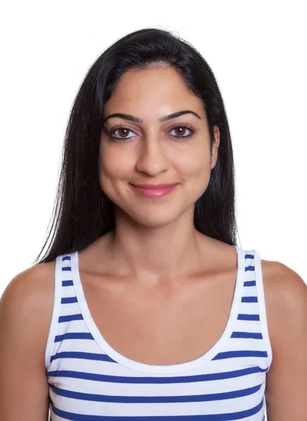

Soraia Silva
Não há palavras para descrever o trabalho da Fotianis! Fez um
acompanhamento perfeito do nosso dia, com muita calma e respeito pela nossa bebé que vamos
guardar para sempre no nosso coração. Sempre impecável na rapidez e na forma como responde
ao nosso contato.
Flávia Silva
Excelente pessoa desde o momento que nos recebe com simpatia e
carinho ao excelente resultado final do seu trabalho com maior profissionalismo e dedicação.
Fotografias com amor, com delicadeza, naturais e espontâneas, o que se pode pedir mais,
obrigada. Irei repetir sempre que precisar.
Diana Prata
Desde o primeiro contacto ao último, que tivemos a certeza que seria
a Fotianis, o fotógrafo da data tão importante que queríamos registar, o batizado do nosso
filho. Sem palavras, para todo o profissionalismo e simpatia. Certamente voltaremos a
contratá-lo, e a recomendá-lo!
Rafael Coelho
Não há palavras para descrever o sentimento quando encontramos
alguém que transparece em imagem a felicidade de um momento! As imagens que idealizamos!
Obrigada Fotianis, pelo excelente trabalho! Incansável, atento ao detalhe, e muito
simpático!
Desde o primeiro momento, e durante todo o evento.
Catarina Lima
Profissionalismo e dedicação são as palavras que definem o trabalho
da Fotianis. Registou o nosso casamento com maestria e emoção. Cada fotografia conta uma
história e nos leva de volta àquele dia especial. Recomendo de olhos fechados!
João Santos
Uma empresa que sabe captar os momentos mais genuínos e
espontâneos. O ensaio de família superou todas as nossas expectativas. As crianças ficaram à
vontade e o resultado foram imagens naturais e cheias de vida. Um trabalho excepcional!
.png)